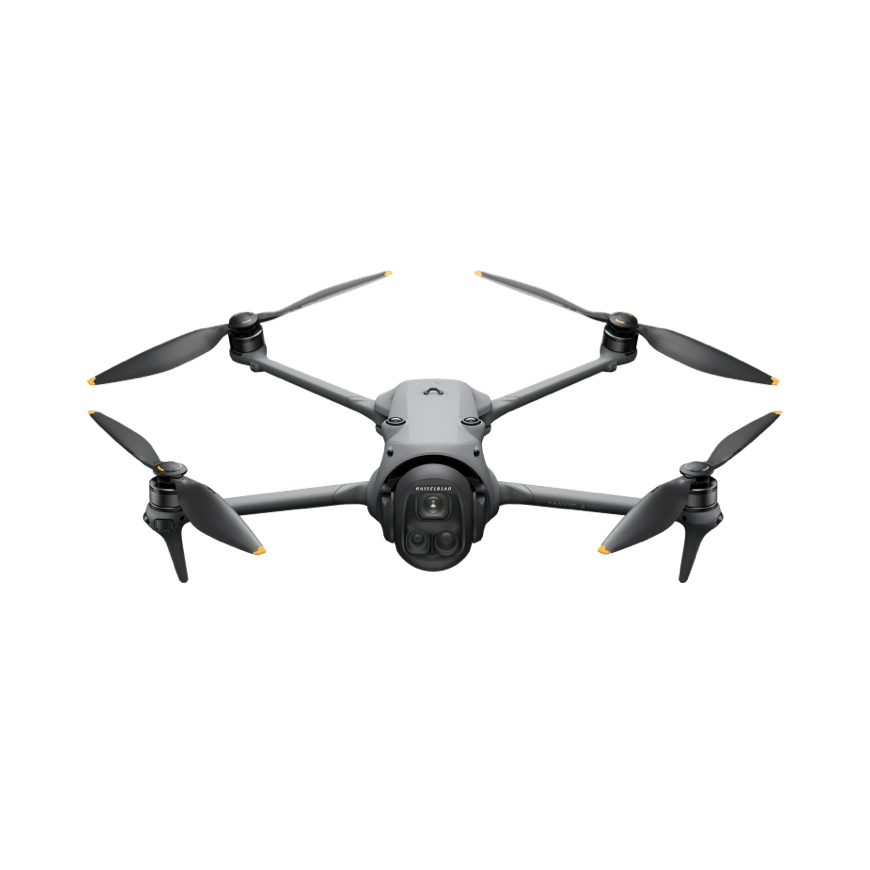

Een blik vanuit de lucht
Drone / Eigen beelden
Dronefotografie & video
Jouw locatie, gebouw of evenement vanuit de lucht. Als dronepiloot maak ik foto’s en video’s met mijn DJI Mavic 4 Pro, met aandacht voor het volledige beeld.
Kijk, luister en beleef het verhaal.
Open een film om hem te bekijken.
Drone / Eigen beelden
De blik achter de beelden
Ik ben Seppe, fotograaf, videograaf en dronepiloot. Met mijn eigen drone breng ik locaties en momenten vanuit een nieuw perspectief in beeld. We bekijken samen welke beelden bij jouw verhaal passen.

Je vertelt wat je voor ogen hebt. We bespreken de sfeer, de locatie en wat je met de beelden wilt doen.
Een duidelijke aanpak en aandacht voor de details. Tijdens de shoot denk ik mee en leg ik vast wat jouw verhaal eigen maakt.
Een selectie en afwerking die passen bij de afgesproken stijl. Zodat je jouw verhaal kunt delen.
Er is meer om te ontdekken.
Jouw volgende verhaal
Deinze, België
Een shoot, nieuwe content of een verhaal in beweging? Vertel me wat je voor ogen hebt.
info@sdlvisuals.be